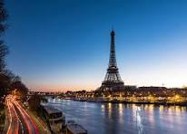
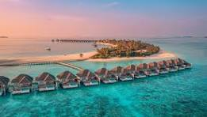
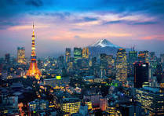
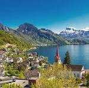
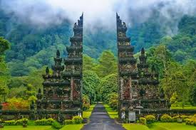

-
PARIS

The city of lights, romance, and endless adventure.
Place to visit:
- Eiffel Tower - The icon of Paris. Climb up or take in views from below locate
- Louvre Museum (Musée du Louvre) - Home of the Mona Lisa, Venus de Milo & huge art collections. locate
- Notre-Dame Cathedral - Gothic architecture; the restoration/reopening after the fire is ongoing and fascinating. locate
- Musée d’Orsay - Built in a former train station, gorgeous for Impressionist & Post-Impressionist art. locate
- Sacré-Cœur & Montmartre -Hilltop views, the basilica, artsy streets, bohemian vibes. locate
- Arc de Triomphe & Champs-Élysées - Great for sweeping views, luxury shops, prestige. locate
- Palace of Versailles (just outside central Paris) -Majorly opulent palace + gardens.
locate
Activity to do:
- Take a Seine River Cruise-
- especially at sunset or night when the city lights sparkle.
- Walk through Montmartre-
- explore the artists’ square, Sacré-Cœur, and little cafés.
- Museum Hopping-
- Louvre, Musée d’Orsay, Musée de l’Orangerie, Centre Pompidou.
- Opera Garnier Tour-
- a stunning 19th-century opera house.
- Catch a Cabaret Show-
- Moulin Rouge or Crazy Horse for a classic Parisian night out.
- Explore Covered Passages-
- hidden arcades full of shops and old-world charm.
Travel Package:
| Destination |
Price(per member) |
Duration |
| Eiffel Tower |
$280 -$420 |
1Day |
| Louvre Museum |
$225-$250 |
1Day/1night |
| Notre-Dame Cathedral |
$250-$450 |
1Day |
| Musée d’Orsay |
$330-$400 |
One Day+ One Night |
| Sacré-Cœur & Montmartre |
$250-$400 |
One day |
| Arc de Triomphe & Champs-Élysées |
$200 - $300 |
One Day |
| Palace of Versailles |
$280+$450 |
One Day+ One Night |
MALDIVES

Pristine beaches and crystal-clear waters await.
Place to visit:
- Ari Atoll-Large atoll with many resort islands; excellent diving and snorkeling spots. locate
- Meeru Island-Beautiful resort, good beaches, easy transfer from Malé (~50 km), a good mix of relaxation & amenities. locate
- Vilamendhoo-Known for its lush resorts, gorgeous lagoon, many diving sites & water sports. locate
- Malé (the capital)-Offers cultural experiences, markets, mosques, local life. Good for a day‐visit. locate
- Vaadhoo Island-Famous for its “Glowing Beach” — bioluminescent plankton lights up the shore at night. Very magical. locate
- Bandos-Nice resort island with a good balance of natural beauty, amenities & water-activities. locate
Activity to do:
- Snorkeling & Diving-
- explore vibrant coral reefs and marine life.
- Water Sports-
- jet skiing, windsurfing, paddleboarding, kayaking.
- Sunset Cruises-
- romantic boat rides with stunning views.
- Island Hopping-
- visit multiple islands to experience different beaches and cultures.
- Spa & Wellness-
- indulge in luxurious spa treatments at resort spas.
- Fishing Trips-
- try your hand at traditional Maldivian fishing.
Travel Package:
| Destination |
Price(per member) |
Duration |
| Ari Atoll |
$300 -$500 |
1Day |
| Meeru Island |
$250-$400 |
1Day/1night |
| Vilamendhoo |
$350-$450 |
1Day |
| Malé (the capital) |
$200-$250 |
One Day |
| Vaadhoo Island |
$300-$450 |
One Day+ One Night |
| Bandos |
$200 - $350 |
One Day |
TOKYO

Experience the fusion of tradition and technology.
Place to visit:
- Senso-ji Temple (Asakusa)-Tokyo’s oldest temple, beautiful traditional architecture, the Kaminarimon Gate, the Nakamise street full of snacks & souvenirs. locate
- Tokyo Skytree-Just wow views from the observation decks. On a clear day you can see for miles. locate
- Shibuya Crossing-The famous scramble crossing. Very “Tokyo” for neon lights, crowds, energy. Nearby Shibuya 109 shopping, etc. locate
- Meiji Shrine & Yoyogi Park-A contrast to the city—peaceful forested shrine grounds, a bit of calm in the bustle. locate
- Ginza-Luxury shopping, high-end dining, elegant streets. Great for window shopping and trying fine food. locate
Activity to do:
- Meiji Shrine –
- peaceful Shinto shrine surrounded by forest.
- Tea Ceremony Experience –
- join a traditional matcha tea ceremony.
- Explore Yanaka District –
- “old Tokyo” with temples, retro streets, and small shops.
- Odaiba-
- futuristic entertainment hub with teamLab Borderless (digital art museum), giant Gundam statue, shopping, and bay views.
- Shibuya Crossing-
- the world’s busiest pedestrian crossing; visit Shibuya Sky for amazing views.
- Kabuki Theatre (Ginza)-
- watch classical Japanese drama.
Travel Package:
| Destination |
Price(per member) |
Duration |
| Senso-ji Temple (Asakusa) |
$200 -$350 |
1Day |
| Tokyo Skytree |
$250-$400 |
1Day/1night |
| Shibuya Crossing |
$300-$450 |
1Day |
| Meiji Shrine & Yoyogi Park |
$220-$300 |
One Day |
| Ginza |
$280-$400 |
One Day+ One Night |
SWITZERLAND

Pristine Alpine landscapes, serene lakes, and charming medieval towns.
Place to visit:
- Zermatt / Matterhorn-The iconic Matterhorn peak, excellent hiking, skiing, panoramic cable cars. Very picturesque. locate
- Lucerne-Medieval town, beautiful lake, Chapel Bridge, old town charm, good base for mountain excursions. locate
- Interlaken & the Bernese Oberland-Adventure hub: hiking, paragliding, scenic views, lakes (Thun, Brienz), close to Jungfrau region. locate
- Lake Geneva & Montreux-Lakeside scenery, vineyards, beautiful towns; Montreux is relaxing; Château de Chillon is a must. locate
- Geneva-International city with culture, museums, Jet d’Eau, lakeshore promenades. locate
- Bern-Switzerland’s capital with a lovely old town, historic clock tower, charming streets. locate
Activity to do:
- Ride the Glacier Express or Bernina Express-
- scenic train journeys through the Alps.
- Jungfraujoch (“Top of Europe”)-
- take the cogwheel train to Europe’s highest railway station, with views of Aletsch Glacier.
- Lauterbrunnen Valley-
- hike among 72 waterfalls, alpine meadows, and cliffs.
- Grindelwald First Cliff Walk-
- thrilling suspension bridge & alpine views.
- Mount Pilatus (Lucerne)-
- ride the world’s steepest cogwheel railway.
- Skiing & Snowboarding
- Zermatt, St. Moritz, Verbier, Jungfrau region.
Travel Package:
| Destination |
Price(per member) |
Duration |
| Zermatt / Matterhorn |
$300 -$500 |
1Day |
| Lucerne |
$250-$400 |
1Day/1night |
| Interlaken & the Bernese Oberland |
$350-$450 |
1Day |
| Lake Geneva & Montreux |
$220-$300 |
One Day |
| Geneva |
$280-$400 |
One Day+ One Night |
| Bern |
$200 - $350 |
One Day |
- BALI

Famous for its stunning beaches, lush landscapes, and vibrant culture.
Place to visit:
- Tanah Lot Temple-One of the most iconic sea temples in Bali. Great for sunset views, photo ops. locate
- Tegalalang Rice Terraces (Ubud area)-Gorgeous terrace fields, beautiful greenery & traditional Balinese farming scenes. locate
- Uluwatu Temple-Dramatic temple on sea cliffs; also famous for Kecak dance performances at sunset. locate
- Seminyak-Trendy beaches, stylish cafés, shops, beach clubs, nice place to relax & enjoy nightlife. locate
- Nusa Penida-Island off Bali with rugged coastline, hidden beaches, great snorkeling/swimming. locate
- Mount Batur-Climb up for sunrise—views of the crater, lake, surrounding volcanoes are breathtaking. locate
Activity to do:
- Surfing in Kuta or Canggu-
- great for beginners and pros.
- Island Hopping-
- Nusa Penida, Nusa Lembongan, or Gili Islands nearby.
- Snorkeling / Diving in Nusa Penida or Amed-
- crystal-clear waters, manta rays, vibrant reefs.
- Tanah Lot Temple-
- iconic sea temple, magical at sunset.
- Besakih Temple-
- “Mother Temple” of Bali, very spiritual.
- Goa Gajah (Elephant Cave)
- historic temple with carvings & holy springs.
Travel Package:
| Destination |
Price(per member) |
Duration |
| Tanah Lot Temple |
$200 -$350 |
1Day |
| Tegalalang Rice Terraces (Ubud area) |
$250-$400 |
1Day/1night |
| Uluwatu Temple |
$300-$450 |
1Day |
| Seminyak |
$220-$300 |
One Day |
| Nusa Penida |
$280-$400 |
One Day+ One Night |
| Mount Batur |
$200 - $350 |
One Day |
About US
Escape Route is your gateway to unforgettable journeys. We curate tours, events, and experiences from around the globe, making your travels seamless and memorable.